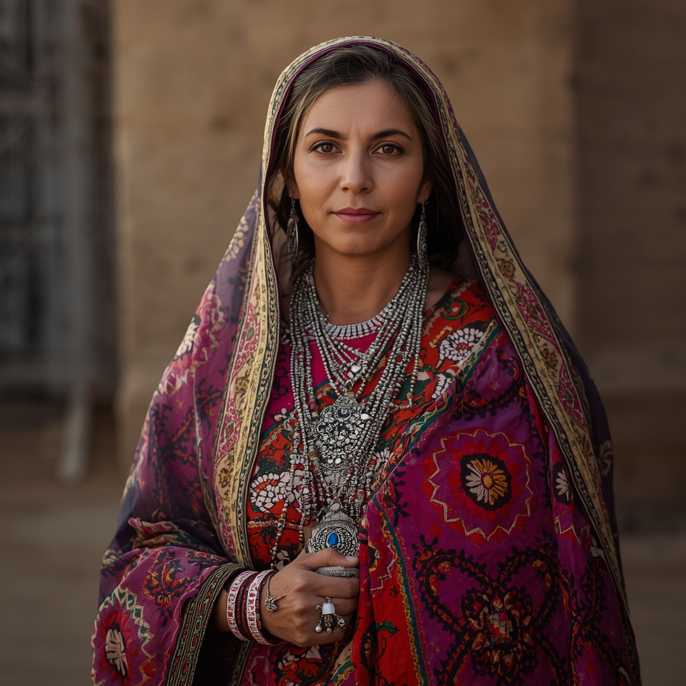

🧑🤝🧑 世界の民族・人びと
People of the World。国境を越えて暮らす人びとを、地域ごとに紹介します。伝統だけでなく、今の暮らしも一緒に。

ベルベル人(アマジグ)
🗣 使用言語
タマジク語(ベルベル諸語)、アラビア語
👥 人口の目安
約2,500万〜3,600万人(モロッコ・アルジェリアを中心とする北アフリカ)
👘 伝統衣装
男性は長衣「ジェラバ」やフード付きのマントを、女性は色鮮やかなカフタンを身につけ、既婚女性は銀の装身具で装うことが多い。
🏠 住居
アトラス山脈やサハラ砂漠周辺では、日干しレンガや土で築かれた要塞集落「カスバ」や「クサール」に住む伝統がある。
🍲 食文化
クスクスやタジン鍋料理を中心に、穀物・野菜・羊肉などを用いた料理が日常的に食べられる。
🎵 音楽・踊り
太鼓(ベンディール)や笛を用いた集団の音楽と踊りが結婚式や祭事で披露され、地域ごとに独自の旋律が受け継がれている。
🎉 行事・祭り
各地の収穫祭や聖者廟での祭礼のほか、近年制定されたアマジグ暦の新年「イェンナイェル」も祝われるようになっている。
🙏 信仰・価値観
大多数がスンニ派イスラム教を信仰し、少数がイバード派やキリスト教、ユダヤ教を信仰する。イスラム化以前の土着信仰の名残が民間習俗に残る地域もある。
📜 歴史
北アフリカのマグレブ地方に紀元前1万年頃から住む先住民とされ、ヌミディア王国やマウレタニア王国などの古代国家を築いた。7〜8世紀のアラブ人の到来以降アラビア語化とイスラム化が進んだが、独自の言語と文化は現在まで受け継がれている。
🏙 現代の暮らし
モロッコやアルジェリアを中心に都市部にも多く暮らし、20世紀後半以降は言語・文化的権利を求める運動を通じてタマジク語の公用語化なども進んでいる。
🇯🇵 日本との関係
モロッコ産のアルガンオイルは美容オイルとして日本でも人気があり、シャウエンの街並みやサハラ砂漠でのベルベル文化は旅行番組でたびたび紹介されている。
🌍 関連する国


出典: https://en.wikipedia.org/wiki/Berbers(2026-09-01時点) / https://www.britannica.com/topic/Berber(2026-09-01時点)